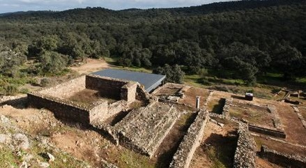

|
|
|||||||
| El conjunto arqueológico de Mulva-Munigua está localizado a ocho kilómetros de la localidad sevillana de Villanueva del Río y Minas. Asentamiento prerromano del siglo IV a.e.c., de esta época, son las acumulaciones de escorias de hierro, que se localizan por todo el yacimiento, ya que la actividad principal era la fundición de este material.
Munigua comenzó una relación de patronazgo con el Imperio Romano, que quedó reflejada en una placa de bronce con la que se simbolizó la unión de la ciudad a Roma. Más tarde pasó a tener rango de municipio con el Emperador Vespasiano (69 - 79) "Municipium Flavium Muniguense". La ciudad tuvo su apogeo en el siglo II. La ciudad entró en decadencia tras sufrir un terremoto en el siglo III, con un descenso sucesivo de la población, hasta su desaparición entre los siglos V y VI. La mayoría de las construcciones, corresponden al último tercio del siglo I. Este auge constructivo se atribuye al cambio de estatus jurídico del Municipio. La muralla circunda la ciudad
quedando la zona oeste abierta. Se piensa que no se trata en principio de una
muralla defensiva. Se descubrió una puerta al sur y cuatro torres interiores.
El Foro y la Basílica se hallan en la terraza inferior. Se trata de una plaza porticada en cuyo centro se levanta un templo sobre un podium. En el lado Norte cuatro estancias de las que se identifican tres. La mayor es la Curia. En la siguiente un monumento al Dis Pater, en forma de caballo de bronce. Y por último el Tabularium, archivo de la ciudad. En el lado sur se halla la Basílica. Las Termas se hallan cubiertas para poder proteger las pinturas que en ellas se pueden ver. Las paredes presentan una decoración pintada por paneles con grandes rectángulos rojos y líneas amarillas. En el abside una estatua de una Ninfa presidía la sala con una fuente a sus pies. Las otras habitaciones eran el caldarium, tepidarium y frigidarium. Se han sacado a la luz hasta seis edificios residenciales. Éstos siguen el modelo de las casas romanas, un patio en torno al cual se disponen las habitaciones.

Se han excavado dos zonas de
enterramientos. La mejor conservada se halla en torno al Mausoleo, en la
parte Este de la ciudad. Los enterramientos principalmente son de
incineración.
En Los investigadores creen que la mina
de la antigua ciudad de Munigua, situada en el sur de España, fue
desarrollada por miembros de la cultura Turdetana desde hace más de
4.000 años. Los arqueólogos han encontrado salas subterráneas, pozos y
túneles ventilados, excavados en el terreno y al parecer desarrollados
posteriormente por los romanos, quienes se hicieron con las
explotaciones de los cartagineses que, a su vez, se las habían
arrebatado a los habitantes de la región en el siglo III a. C.
se extraían enormes cantidades de
hierro y cobre para Roma en Munigua, pero que las explotaciones cesaron
en el siglo II d. C. junto con las de otras minas de la península
Ibérica, a la que los romanos denominaba Hispania.
|
| CIUDADES DE HISPANIA |
|
SEVILLA ROMANA |